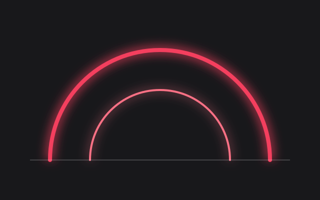
Two stylesheets
theme.css holds the palette and the glow tokens; global.css holds every component. Nothing else to load but the two fonts.
Lights on
Neon is the dark template. Zinc surfaces, hairline borders, a rose tube for what matters and a cyan one for what is merely true. Its light mode is only less dark: the ground lifts to a warm grey and the glow keeps working.

Take css/, js/theme.js and assets/ and you have the whole template; everything else here is the showroom. Three ordinary cards: with a picture, with an icon, with neither. Each sits on a sheet one step lighter than the page, behind a one-pixel line of light.

theme.css holds the palette and the glow tokens; global.css holds every component. Nothing else to load but the two fonts.
Every colour is a light-dark() pair, but the light half never reaches white. The toggle in the corner cycles auto, light and dark; try it and watch the ground lift.
The palette block in theme.css pastes straight into a retoken site and turns it black. See the tokens.
Horizontal cards put the media on the left or, with card-media-end, on the right. On a narrow screen they stack.
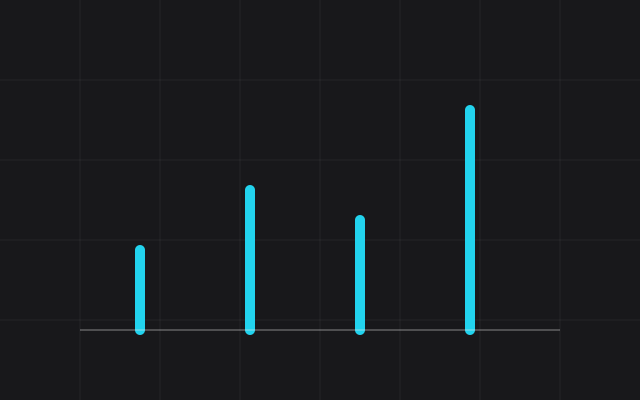
The image takes a little over a third of the width; the words take the rest.
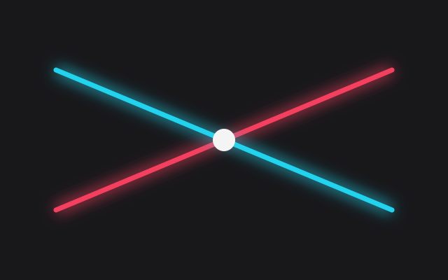
The same card, flipped. Same markup; one class differs.
Every template has one feature card with an effect of its own. Neon's border is a tube: at rest a short stretch is lit in one corner, and on hover the light runs the whole way round while the card lifts into its glow. Hover it, or tab to the button inside.
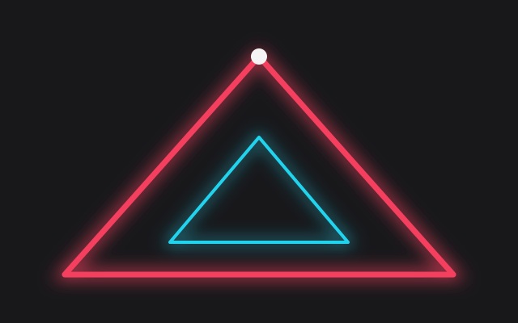
A conic gradient shows through the card's own one-pixel border, and a registered custom property turns it. No extra markup, no script, and under prefers-reduced-motion the light simply stays where it is.
The fifty-fifty block gives an image half the width and the words the other half. Add fifty-fifty-reverse and the image moves right. On a phone the image comes first either way.

Image left
A heading, a paragraph and a single call to action. The kicker above is cyan because it is information; the button is rose because it is the thing to do.
How it is built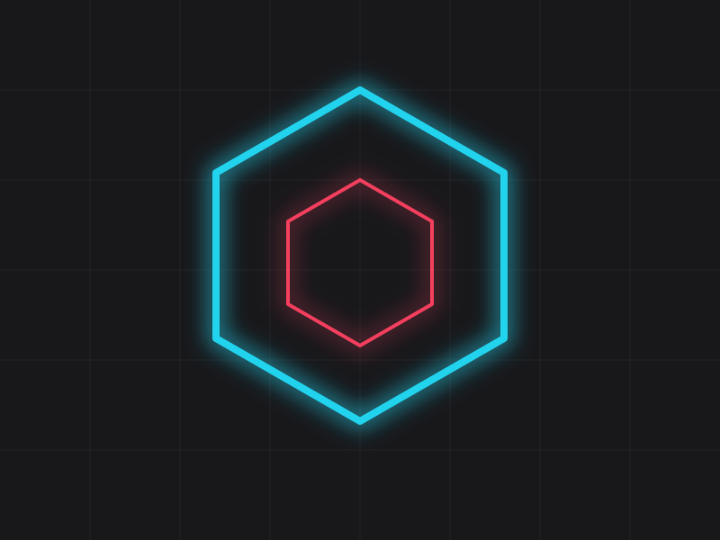
Image right
Alternate them down a page and the eye is led from side to side without any extra styling.
Read the docsAccordions are native <details> elements. Give a group the same name and opening one closes the others, with no script. The open one's marker lights up.
Really not. The light half's page colour is #3a3a42, a warm dark grey, and the surfaces step up from there. Text stays off-white in both halves; the links move to a lighter rose so they clear 4.5:1 on the lifted ground.
Because both halves are dark, the template pins native controls, dialogs and open menus to the dark scheme so the browser never paints a white dropdown or date picker. Inside those elements the palette resolves to its dark half, so a field is always a black well.
About forty lines for the theme toggle, and a one-line onclick on anything that opens a dialog. The glows, the sweep and the haze are CSS.
A single accordion stands on its own.
Anything from 2024 on: light-dark(), :has(), popovers, exclusive accordions and @property for the animated border.
Click any image. The lightbox is a <dialog> with a cyan glow; the arrows and the thumbnails are plain links, and Esc closes it.
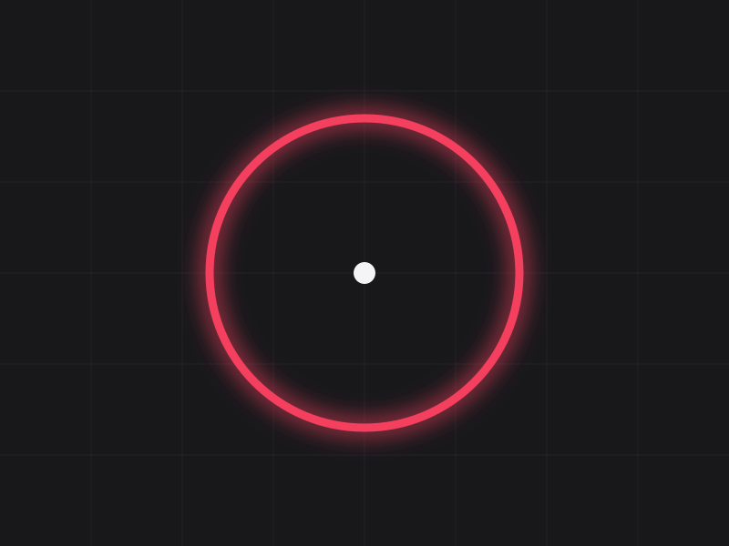
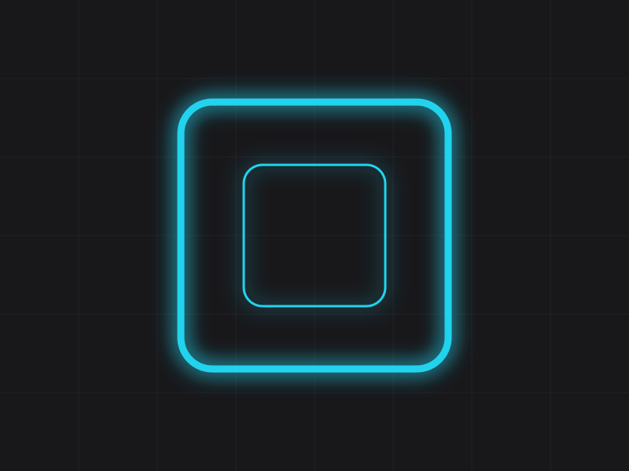
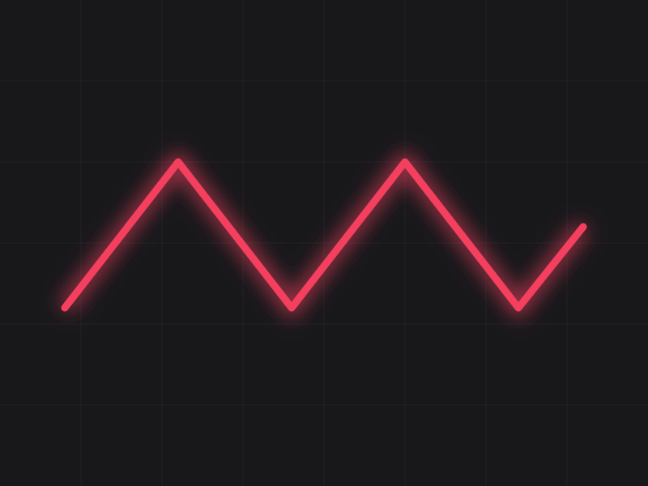
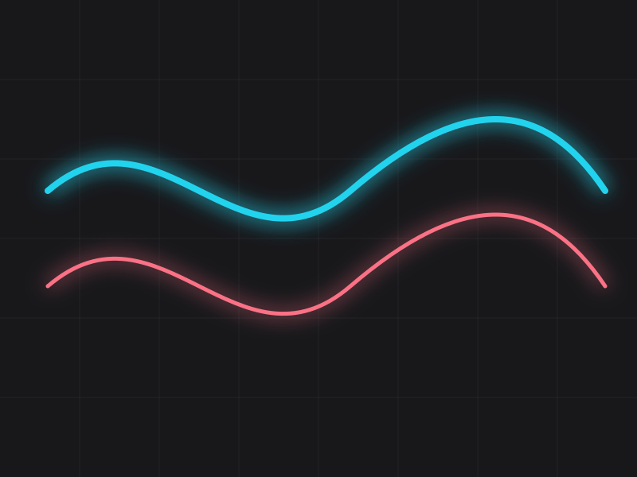
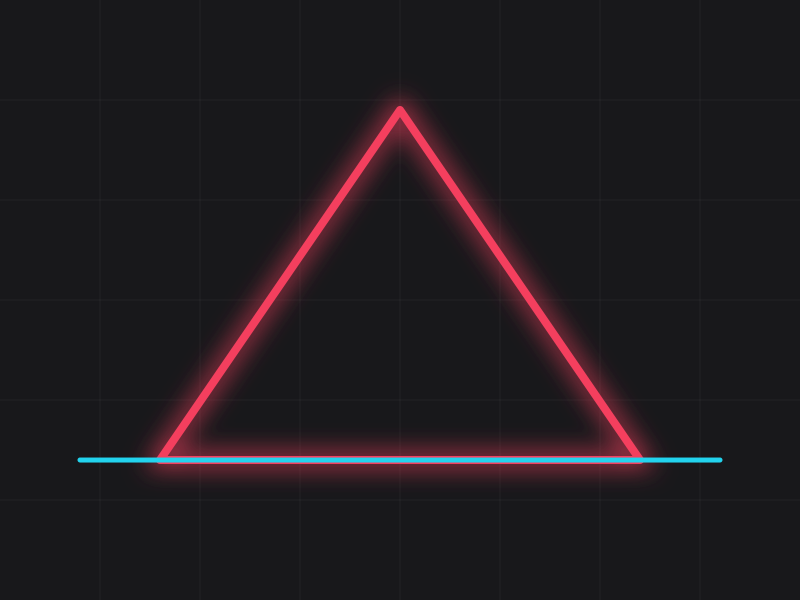
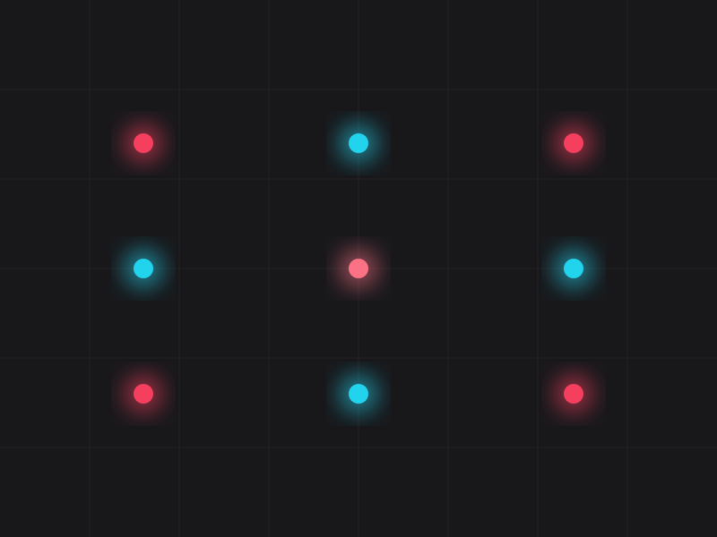
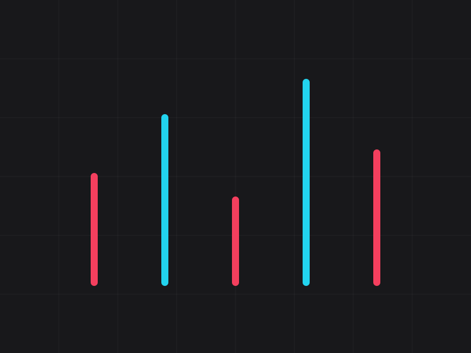
Buttons are pills in three kinds and three sizes; the primary one carries its own glow and the danger one is an outline until you commit. A switch is a checkbox with role="switch". Badges and banners carry status, each lit in its own colour.
Tables sit inside a wrapper that scrolls sideways when they are wider than the page. Column heads are set in the display face.
| Component | Element | Script | Docs |
|---|---|---|---|
| Accordion | <details> | none | accordion |
| Lightbox | <dialog> | one line | gallery |
| Navbar menu | popover | none | navbar |
| Switch | <input> | none | switch |
| Theme toggle | <button> | theme.js | theme |
Dialogs are native too. The button below opens one; it closes itself through a form, and the page behind it blurs.
Prose is what most pages are made of, so .prose styles every construct a markdown renderer produces: headings in Space Grotesk, body in Inter, inline code in cyan, quotes with a lit edge. The blog post page runs the full test document through it; defaults shows every bare element.
A dark theme is not a light theme with the values swapped. It is a room with the lights off and a few of them on.